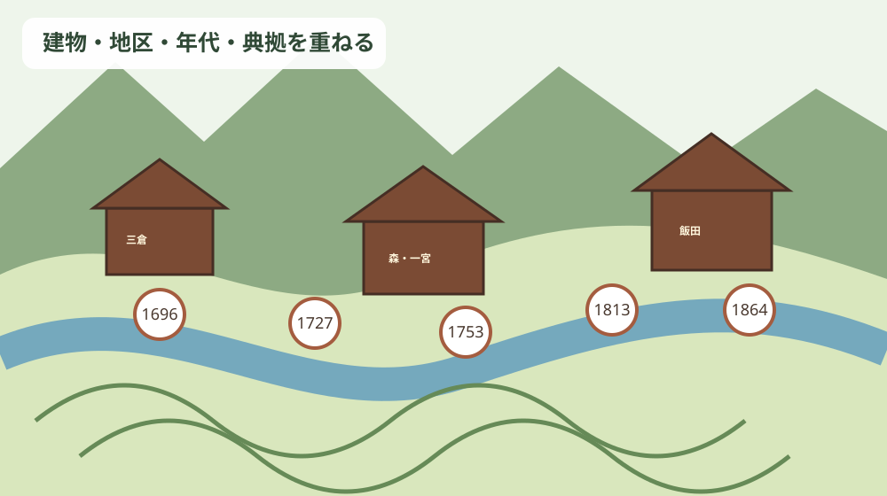
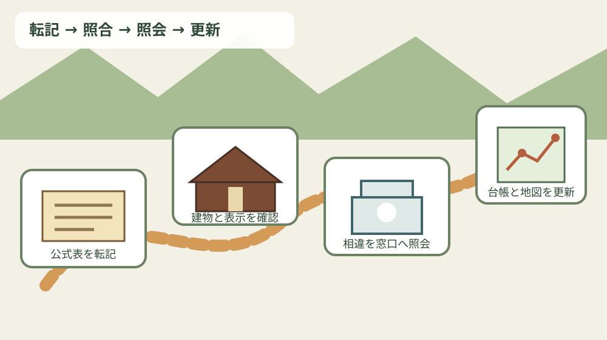

森町の寺院建築年代台帳｜建立年・建物・宗派・典拠を地図化する
この記事の要点
Q. 森町の古い寺を地図で調べたいとき、寺名と創建年を並べればよいでしょうか。
A. 寺院ではなく、現存建物と年代の根拠を一行にしてください。森町公式「46 森町の寺院建築」には、1696年の栄泉寺本堂から1864年の長月寺本堂まで18行があり、建物名、宗派、典拠が併記されています。建立年を寺院そのものの創建年へ読み替えず、「年代／寺院／地区／建物／宗派／典拠／補足／確認日」の列で地図に結ぶのがこの記事の答えです。
寺院案内ではなく「建物年代の証拠台帳」を作る
森町には寺院ごとの所在地や宗派を探せる既存の寺院ページがあります。今回作るものは、その一覧を増やす記事ではありません。誰の墓をどの寺が引き継ぐかという墓じまい・承継の案内でもありません。公式資料に載る建物一棟ごとの年代と、その判断根拠を地図上で比較するための台帳です。
最初に区別したいのは、「寺が始まった年」と「今ある本堂などが建てられた年」です。寺院の開創が古くても、火災、移転、再建、修理を経た建物は別の年代を持ちます。森町公式の表題も「寺院本堂および諸建物建立年代一覧」であり、寺院創建年の一覧ではありません。
地図の点に寺名だけを置くと、この違いが消えます。点の主語を「栄泉寺」ではなく「栄泉寺本堂」、「福泉寺」ではなく「福泉寺観音堂」と書けば、同じ境内に複数年代の建物がある場合にも対応できます。
さらに、年代だけを太字にするのでは不十分です。公式表には棟札、墨書、旧棟木墨書、鰐口銘、寺伝、由緒書という異なる典拠が並びます。年と典拠を切り離さないことが、台帳のいちばん大切な約束です。
森町公式資料から確定できる全18行
森町公式「46 森町の寺院建築」は、町内の宗派構成を曹洞宗27か寺、日蓮宗・真言宗・天台宗各2か寺、浄土宗1か寺と説明しています。この数は宗派構成を理解する資料であり、今回の年代表に載る18行の宗派内訳とは別です。
同ページは、建立年代が判明する寺院建物のうち最古を、1696年（元禄9年）の三倉・栄泉寺本堂としています。解体修理で墨書銘が見つかり、その年の建立が明らかになったという説明もあります。
| 西暦 | 寺院・地区 | 建物 | 宗派 | 典拠 |
|---|---|---|---|---|
| 1696 | 栄泉寺・三倉 | 本堂 | 曹洞宗 | 墨書 |
| 1724 | 宗源寺・睦実 | 本堂 | 曹洞宗 | 棟札 |
| 1725 | 高雲寺・一宮 | 本堂 | 曹洞宗 | 旧棟木墨書 |
| 1727 | 福泉寺・西俣 | 観音堂 | 曹洞宗 | 鰐口銘 |
| 1735 | 梅林院・森 | 本堂 | 曹洞宗 | 棟札 |
| 1748 | 蔵雲院・大鳥居 | 本堂 | 曹洞宗 | 棟札 |
| 1753 | 梅林院・森 | 本堂 | 曹洞宗 | 棟札 |
| 1778 | 泉竜寺・睦実 | 本堂 | 曹洞宗 | 棟札 |
| 1781 | 崇信寺・飯田 | 本堂 | 曹洞宗 | 棟札 |
| 1783 | 自得院・鍛冶島 | 本堂 | 曹洞宗 | 寺伝 |
| 1793 | 太慶寺・大久保 | 本堂 | 曹洞宗 | 棟札 |
| 1799 | 安養院・一宮 | 本堂 | 浄土宗 | 棟札 |
| 1813 | 蓮華寺・森 | 観音堂 | 天台宗 | 棟札 |
| 1821 | 万福寺・問詰 | 本堂 | 曹洞宗 | 由緒書 |
| 1824 | 陽向院・薄場 | 本堂 | 曹洞宗 | 棟札 |
| 1836 | 蔵泉寺・田能 | 本堂 | 曹洞宗 | 棟札 |
| 1837 | 金剛寺・三倉 | 山門 | 真言宗 | 寺伝 |
| 1864 | 長月寺・乙丸 | 本堂 | 曹洞宗 | 棟札 |
この18行には、本堂15行、観音堂2行、山門1行が載ります。寺院数として数えると梅林院が二度現れるため17寺ですが、台帳は公式表を尊重して18行のまま保持します。件数の主語を「寺」か「建物記録」かで変えない注意が必要です。
宗派は曹洞宗が15行、浄土宗、天台宗、真言宗が各1行です。ただし、これは年代が判明して表に載った建物記録の内訳です。町内全寺院の宗派比率をこの18行から計算することはできません。
地区を見ると、三倉、睦実、一宮、西俣、森、大鳥居、飯田、鍛冶島、大久保、問詰、薄場、田能、乙丸へ点が広がります。森町中心部だけを歩いても、年代台帳の全体像はつかめません。

典拠を残すと、確定と保留が見える
18行のうち棟札を典拠とする記録は12行です。残りは墨書、旧棟木墨書、鰐口銘、寺伝2行、由緒書です。多数派が棟札だからといって、ほかの典拠を棟札相当と書き換えてはいけません。
棟札は建築時の情報を伝える重要な手掛かりですが、表からは現物の所在、全文、後世の写しの有無まで分かりません。台帳には「公式表の記載」と「現物を確認した記録」を別列に置きます。未確認欄が空白ではなく「未確認」と読める設計が安全です。
栄泉寺本堂の「墨書」は、公式本文が解体修理によって1696年の墨書銘を発見したと補足しています。ここでは表の一語だけでなく、発見状況まで補足欄へ入れられます。
高雲寺本堂は1725年で、典拠は「旧棟木墨書」です。現在の部材の墨書だと短縮せず、「旧棟木」の語を残すことで、建物の履歴を次に調べる入口になります。
福泉寺観音堂は1727年で、典拠は「鰐口銘」です。建物そのものの棟札ではない点を消さず、銘文が何の年を指すかは原資料へ戻って確認する課題として残します。
自得院本堂の1783年と金剛寺山門の1837年は寺伝が典拠です。寺伝を弱いから除外するのでも、他の物証と同一視するのでもなく、「町公式表が寺伝として掲げる年」と正確に書きます。
万福寺本堂の1821年は由緒書が典拠です。由緒書の成立年代や筆者が公式ページだけでは分からないため、地図の吹き出しに断定を重ねず、資料名をそのまま表示します。
注文したい点――表の食い違いは、消さずに二段で記録する
梅林院本堂は公式表に1735年と1753年の二行があり、どちらも典拠は棟札です。同じページの写真説明は、1735年に三嶋山の下から現在地へ移転したときに建てられ、平成10年に大修理をしたと記します。
このとき台帳作成者が1753年を誤記と決めることはできません。1735年行、1753年行、写真説明の1735年、平成10年の大修理をそれぞれ別レコードにし、「同じ本堂について資料内に複数年」と注記します。
崇信寺本堂にも読み比べの課題があります。公式表は1781年（安永10年）、写真説明は1776年（安永5年）建立で大工は幡鎌村の小西文右衛門と記します。片方を隠さず、表記位置と内容を二段で保存するのが証拠台帳です。
蓮華寺観音堂は表で1813年、写真説明では1819年に観音堂屋敷へ建てられ、その後現在地へ移されたとあります。建立、移築、棟札の解釈がどう対応するかは、このウェブ記事だけから断定しません。
金剛寺山門は表に1837年（天保8年）とありますが、写真説明では「大日山金剛院山門」が1834年（天保8年）に建立と伝わると記されます。寺名と西暦・元号の組み合わせに差があるため、原文位置を添えて文化振興係へ照会する候補です。
ここでの「保留」は誤りを放置する意味ではありません。違いを見える状態にし、何を尋ねれば一行を確定できるかを残す作業です。
宗派と平面形式は、年代とは別の軸にする
森町公式は、曹洞宗本堂では内陣、大間、室中、東序、西序などからなる6間取りが一般的と説明します。一方で栄泉寺や梅林院は、6室の側に2室を配した整形8間取りの例とされます。
同じ曹洞宗でも平面が一様ではありません。建立年の古い順に並べただけで平面形式を推定せず、実測図や公式解説がある建物だけに平面欄を記入します。
日蓮宗の本立寺本堂は、基本は6間取りながら奥行きが深く、内陣と両側室の奥行きが極端に浅い珍しい形式と説明されています。ただし、本立寺本堂は今回の18行の年代表にはありません。「宗派・平面の説明に登場」と「建立年代表に掲載」を別フラグにします。
天台宗の蓮華寺と蓮増院は整形6間取り、真言宗の金剛院と遍照寺は前半を一室の外陣、奥を内陣と両脇間にする、と公式ページは説明します。宗派の一般論を個別建物の現況へ自動適用しないことも、地図の注記に必要です。
浄土宗の安養院は整形6間取りの前面に畳縁を付けた形式とされ、年代表では1799年、棟札、本堂として載ります。ここでは年代・典拠・平面の三軸が一つの建物で結びつきます。
良い点――神社建築資料を比較すると台帳の型が整う
森町公式「45 森町の神社建築」は寺院一覧ではありませんが、建物年代を地図化する方法の比較資料になります。神社表は年代、建物名・所在地、構造形式、典拠を列に持ち、寺院表にはない「構造形式」が明示されています。
神社表では、1671年の三島神社本殿は三間社・流造・銅板葺で典拠が棟札、1684年の大久保八幡神社本殿は一間社・流造・板葺で棟札、1697年の天宮神社本殿は三間社・流造・檜皮葺で棟札と整理されています。
同じ1697年の天宮神社拝殿は入母屋造・桟瓦葺・妻入りで、典拠は社伝です。同じ境内、同じ年でも、本殿と拝殿を別レコードにする構造は、寺院台帳でも本堂・観音堂・山門を分ける根拠になります。
神社資料は、古材再使用や後の屋根変更にも触れます。つまり建立年は、現在目に見える全部材がその年のものだという保証ではありません。寺院台帳にも「修理・移築・部材更新」の履歴欄を設けるべきだと分かります。
文化財の地域計画とつなぐ意味
森町公式「森町文化財保存活用地域計画の認定について」は、令和8年7月17日の国の文化審議会文化財分科会の答申を受け、文化庁長官により計画が認定されたと案内しています。これは文化財保護法第183条の3に基づく法定計画で、計画本文も公開されています。
計画本文は、令和8年3月時点の指定等文化財を合計116件とし、そのうち有形文化財の建造物を23件と整理しています。この「指定等文化財の建造物」と、寺院建築ページの「建立年代が判明する建物」は同じ集合ではありません。
指定の有無だけで年代台帳から外すと、地域の建築履歴を狭く見てしまいます。逆に、年代表に載ることを文化財指定だと誤解してもいけません。「年代資料への掲載」と「指定・登録の区分」を別列にします。
地図化の価値は、点を観光ルートにすることだけではありません。古い建物、典拠が未確認の建物、複数年代が載る建物を見分け、次の記録調査や修理履歴の整理に順番をつけられる点にあります。
暮らしと所有不動産へどう関係するか
寺院建築の近くには生活道路、住宅、農地、水路、山林があります。地図上で寺院の点が近くても、見学用駐車場や通り抜け道路があるとは限りません。訪問前には寺院の公開案内を確かめ、路上や民有地へ駐車しないことが基本です。
古い社寺が近いというだけで、所有地に特別な制限があるとは断定できません。一方、土地の利用や工事を考えるなら、指定文化財、埋蔵文化財、道路、水路、境界などはそれぞれ担当窓口と資料が異なります。寺院年代地図を法的な区域図の代わりに使わないでください。
良い点は、家族が「近所の古いお寺」という曖昧な記憶を、建物名と典拠へ変えられることです。実家の古写真に山門や観音堂が写る場合も、撮影時期を推測する補助線になります。ただし、写真だけで建立年や所有関係は確定しません。
注意したい点は、建物の古さを不動産価格の上昇・下落へ直結させないことです。文化的な価値と、接道、境界、登記、維持費、災害リスクは別々に確認します。地域への敬意と所有者の現実的な判断を同時に持つ必要があります。
対案・結論――今日から作れる一件カード
一件カードの表面には、寺院名、地区、建物名、宗派、和暦、西暦、典拠、公式ページ内の表番号を書きます。裏面には、移築、修理、別年代、現地表示、写真撮影日、問い合わせ履歴を置きます。
住所は公式に確認できる範囲にとどめ、公開地図では地区レベルから始めます。境内の奥、墓域、私道入口を推測でポイント化しません。研究用の非公開台帳と、一般公開用の地図を分けるのも実務的です。
次に、同じ建物について表と写真説明の年が一致するかを照合します。一致しない梅林院、崇信寺、蓮華寺、金剛寺・金剛院の記録には保留マークを付け、原文を消さずに残します。
最後に、森町社会教育課文化振興係へ質問するときは、「正しい年を教えてください」だけではなく、ページ名、表の行、写真番号、二つの表記を示します。回答日と回答手段を記録し、ウェブ上の更新も定期的に確認します。

家族に残す記録
実家カルテには寺院の由緒を長く書くより、家の住所、土地建物の名義、登記事項の取得日、接道、境界標の有無、農地の地番、地域の連絡先を先に残します。寺院との関係があるなら、何を誰から聞いたかを出典つきで別紙にします。
檀家関係、墓地使用、法要、寄付などの私的な事項は、公開地図へ載せる情報ではありません。契約書、使用許可、領収書、家族の連絡担当を非公開ファイルにまとめ、寺院建築の公的年代台帳とは分離します。
売却を決めていない段階でも、この整理には意味があります。親族が元気なうちに、建物名を取り違えていないか、どの資料を見たのか、誰に問い合わせたのかを共有できるからです。
大石の視点――価格より先に、資料の主語を揃える
ここからは公的資料の記載ではなく、私、大石浩之の見解です。小さな不動産業者として地域の相談を受けるとき、古い寺院が近いという印象だけで評価を上下させるべきではないと考えます。まず資料が寺院、建物、地区、指定区域、土地のどれを主語にしているかを揃えます。
現地では、寺院建物の見学と相談者の土地確認を混ぜません。道路幅、接道、境界、地目、農地該当、登記名義を一件ずつ確認し、寺院の由緒は地域理解の資料として別に置きます。
家族間では、「古い寺の近くだから売れない」「歴史があるから高く売れる」という結論を先に置かないことを勧めます。売る、貸す、保有する、管理を委ねるという選択肢を残し、維持費と連絡体制を数字にします。
寺院年代台帳は査定書ではありません。しかし、事実と伝承、現物資料とウェブ転記、建立と移築を分ける練習になります。この分け方は、実家の登記・境界・農地・建物履歴を整理するときにも、そのまま役立ちます。
よくある質問
建立年は寺院の創建年と同じですか
同じとは限りません。今回の公式表は本堂、観音堂、山門などの建立年代です。開創、再建、移築、大修理は別欄にしてください。
棟札、墨書、寺伝は同じ強さの根拠ですか
同じものとしてまとめません。典拠名を原文どおり転記し、現物確認の有無、所在、確認日を加えます。
梅林院本堂に二つの年代が載るのはなぜですか
公式表には1735年と1753年があり、いずれも棟札とされています。この記事では片方を採用せず、公式資料内の相違として照会候補にします。
正確な位置を公開地図へ載せてよいですか
まずは公式資料の地区名を使います。墓域、私道、非公開建物の位置を推測で細かく公開せず、寺院の案内と近隣生活を優先してください。
まとめ
森町の寺院建築年代台帳は、寺院名の一覧ではなく、建物一棟と一つの典拠を結ぶ記録です。公式表の18行を維持し、寺院数17、建物記録18という数え方を分けると、重複や相違を見失いません。
今日できる一歩は、最寄りの寺を地図へ打つことではなく、一件カードを一枚作ることです。「寺院・地区／建物／建立年／宗派／典拠／別表記／確認日」を書き、分からない欄を空白ではなく未確認と示してください。
地域の歴史を大切にすることと、資料の不一致を率直に記録することは両立します。確定できない年を急いで一つにせず、原文と質問を残す台帳こそ、次の調査と家族の判断に引き継げます。
参考にした公式情報
- 46 森町の寺院建築／静岡県森町（宗派別寺院数、寺院本堂および諸建物建立年代一覧18行、平面形式、栄泉寺・金剛院・蓮華寺・蔵雲院・梅林院・蓮僧院・崇信寺の写真説明を2026年8月17日に確認。ページ更新日2019年3月5日）
- 45 森町の神社建築／静岡県森町（神社社殿建立年代一覧が年代、建物・所在地、構造形式、典拠を分けること、本殿と拝殿を別建物として扱うこと、古材再使用や屋根・部材更新の説明を2026年8月17日に確認。ページ更新日2019年3月5日）
- 森町文化財保存活用地域計画の認定について／静岡県森町（令和8年7月17日の答申を受けた認定、文化財保護法第183条の3に基づく法定計画であること、計画本文の公開、令和8年3月時点の指定等文化財合計116件と建造物23件を2026年8月17日に確認。ページ更新日2026年8月6日）

最終確認日：2026-08-17 ／ 本記事は公表情報と執筆者の見解を分けて記載しています。表と写真説明で年代・寺名に差がある箇所は独自に訂正せず、保留事項として示しました。現地見学、建物内部、棟札等の閲覧可否は各寺院と森町社会教育課文化振興係へ確認してください。